HAWA MAHAL
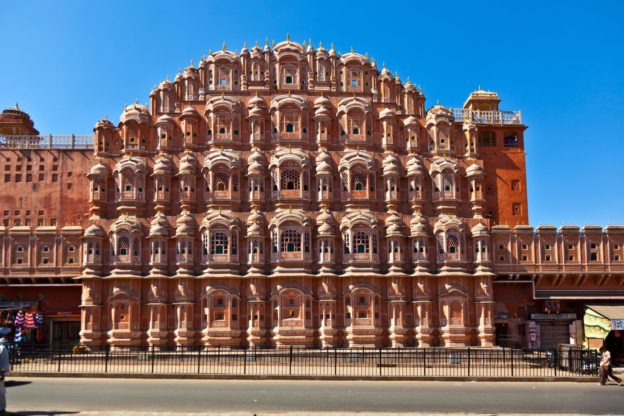The ‘Palace of Winds’ or Hawa Mahal gets its name due to the fact that it looks like a honeycomb of a beehive with its 953 intricate windows. It is also shaped like a crown as the ruler who built it, Maharaja Sawai Pratap Singh, was a major devotee of Lord Krishna. One of the popular tourist places in Jaipur, this palace is known as the tallest building in the world that doesn’t have any foundation. The palace is curved but still stands firm due to its pyramidal shape.
Interesting fact: It was believed that this building was created so that the royal ladies could look outside as they were constantly under ‘purdah’
Hawa Mahal (English translation: "Palace of Winds" or "Palace of the Breeze") is a palace in Jaipur, India. It is constructed of red and pink sandstone. The palace sits on the edge of the City Palace, Jaipur, and extends to the zenana, or women's chambers.
The structure was built in 1799 by Maharaja Sawai Pratap Singh. He was so inspired by the unique structure of Khetri Mahal that he built this grand and historical palace. It was designed by Lal Chand Ustad. Its unique five-storey exterior is akin to the honeycomb of a beehive with its 953 small windows called jharokhas decorated with intricate latticework. The original intent of the lattice design was to allow royal ladies to observe everyday life and festivals celebrated in the street below without being seen, since they had to obey the strict rules of "purdah", which forbade them from appearing in public without face coverings. This architectural feature also allowed cool air from the Venturi effect (doctor breeze) to pass through, thus making the whole area more pleasant during the high temperatures in summer.Many people see the Hawa Mahal from the street view and think it is the front of the palace, but in reality it is the back of that structure.
In 2006, renovation works on the Mahal were undertaken, after a gap of 50 years, to give a face lift to the monument at an estimated cost of Rs 4568 million. The corporate sector lent a hand to preserve the historical monuments of Jaipur and the Unit Trust of India has adopted Hawa Mahal to maintain it. The palace is an extended part of a huge complex. The stone-carved screens, small casements and arched roofs are some of the features of this popular tourist spot. The monument also has delicately modelled hanging cornices. Like several other monuments of Jaipur, the palace is also constructed using sandstone.
Architecture
The palace is a five-storey pyramidal shaped monument that rises 50 feet (15 m). The top three floors of the structure have the width of a single room, while the first and second floors have patios in front of them. The front elevation, as seen from the street, is like a honeycomb with small portholes. Each porthole has miniature windows and carved sandstone grills, finials and domes. It gives the appearance of a mass of semi-octagonal bays, giving the monument its unique façade. The inner face on the back side of the building consists of chambers built with pillars and corridors with minimal ornamentation, and reach up to the top floor. The interior of the mahal has been described as "having rooms of different coloured marbles, relieved by inlaid panels or gilding; while fountains adorn the centre of the courtyard".
Lal Chand Ustad was the architect of this unique structure. Built in red and pink coloured sand stone, in keeping with the décor of the other monuments in the city, its colour is a full testimony to the epithet of "Pink City" given to Jaipur. Its façade depicting 953 niches with intricately carved jharokhas (some are made of wood) is a stark contrast to the plain looking rear side of the structure. Its cultural and architectural heritage is a true reflection of a fusion of Hindu Rajput architecture and Islamic Mughal architecture; the Rajput style is seen in the form of domed canopies, fluted pillars, lotus and floral patterns, and the Islamic style as evident in its stone inlay filigree work and arches (as distinguished from its similarity with the Panch Mahal at Fatehpur Sikri).
The entry to the Hawa Mahal from the city palace side is through an imperial door. It opens into a large courtyard, which has double storeyed buildings on three sides, with the Hawa Mahal enclosing it on the east side. An archaeological museum is also housed in this courtyard.
Hawa Mahal was also known as the chef-d'œuvre of Maharaja Jai Singh as it was his favourite resort because of the elegance and built-in interior of the Mahal. The cooling effect in the chambers, provided by the breeze passing through the small windows of the façade, was enhanced by the fountains provided at the centre of each of the chambers.
The top two floors of the Hawa Mahal are accessed only through ramps. The Mahal is maintained by the archaeological Department of the Government of Rajasthan.
Entry fee: Indians- INR 10
Foreigners- INR 50
Open from: 9.30am-4.30pm
Must see: The intricate lattice work on the tiny windows.
 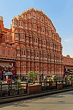
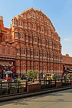
 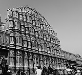
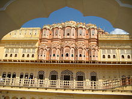
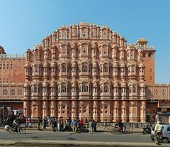
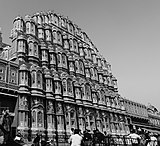
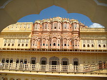
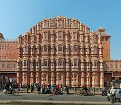
 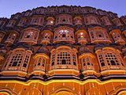
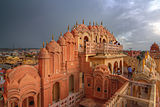
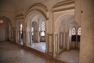
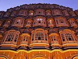
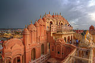
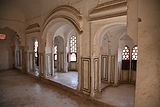
Developed By: Vineet Choudhary